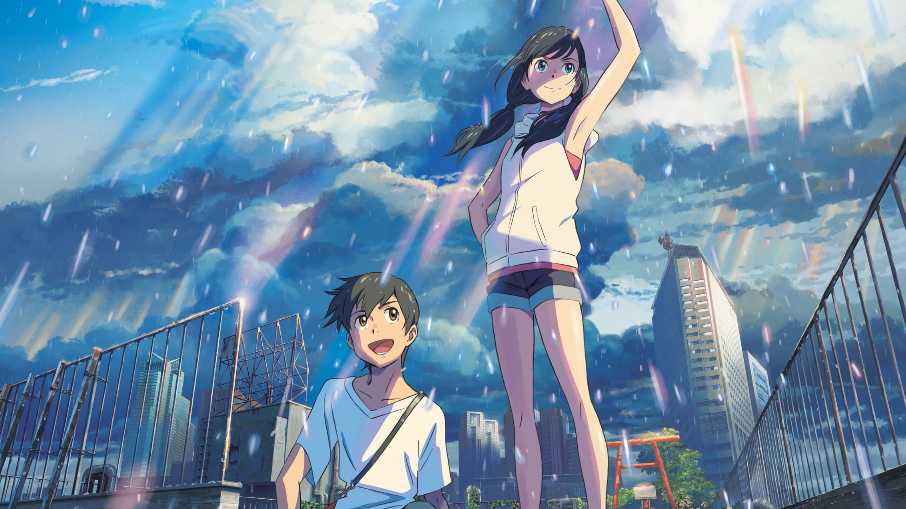
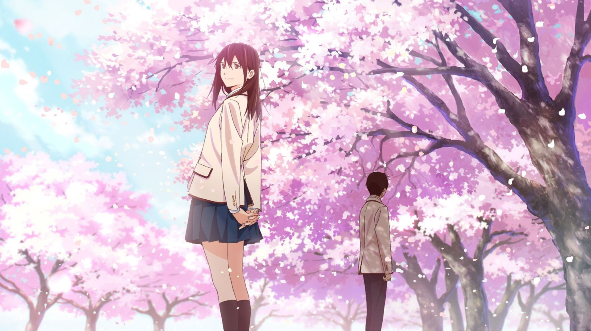
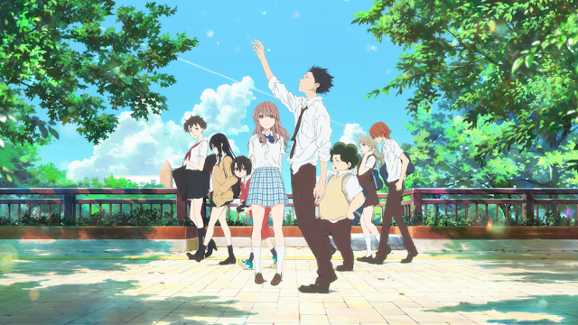

-

Weathering With You
Lise öğrencisi Hodaka Morishima, Kōzu-shima adlı izole bir adada bulunan evini terk edip Tokyo'ya yerleşir. Ancak daha sonradan bu yaptığından pişman olur. Günlerini herkesten soyutlanarak geçiren Hodaka, nihayet gizemli bir dergide yazarlık yapmaya başlar. İşine başladıktan sonra, hava günden güne giderek daha yağışlı bir hal alır. Kalabalık ve yoğun şehrin bir köşesinde, Hodaka, küçük kardeşi ile birlikte yaşayan, ancak neşeli ve azimli bir yaşam süren Hina Amano adında bir ortaokul öğrencisi bir kız ile tanışır.
-

Howl's Moving Castle
Sophie, kendine güveni olmayan bir genç kızken Kötülükler Cadısı tarafından yaşlı bir kadına dönüştürülür. Büyüyü bozacak birini ararken Howl'un hareketli şatosuna ulaşır ve burada temizlikçi olarak çalışmaya başlar. Ateş cini Calcifer ve Howl'un yardımcısı Markl ile arkadaş olur. Bu sırada Howl, komşu ülkeler arasındaki savaşı durdurmaya çalışmaktadır.
-

Your Name
2013 yılında Mitsuha Miyamizu, Japonya'nın Itomori adında kırsal kesiminde dağların etrafını sardığı bir kasabada yaşamaktadır. 2016 yılında Taki ise Tokyo'nun merkezinde yaşayan liseli bir gençtir. Bir gün, Mitsuha Miyamizu ve Taki Tachibana 'nın bedenleri ile açıklanamaz bir şekilde yer değiştirmeye başlar.
-

5 Centimeters Per Second
Takaki ve Akari, çocukken yakın arkadaş olurlar ancak Akari’nin taşınmasıyla aralarına mesafeler girer. Birbirlerine mektuplar yazmaya devam etseler de, yıllar geçtikçe iletişimleri zayıflar. Takaki, Akari'yi son kez görmek için uzun ve zorlu bir tren yolculuğu yapar, ancak bu buluşma bile kaderlerini değiştiremez. Zaman ilerledikçe Takaki hayatına devam etmeye çalışsa da, içindeki boşluk ve geçmişe duyduğu özlem peşini bırakmaz.
-

I Want To Eat Your Pancreas
Sessiz bir çocuk olan Haruki, bir gün Sakura’nın gizli günlüğünü bulur ve onun büyük bir sırrı olduğunu öğrenir. Sakura, Haruki’yi sırrına ortak eder ve onunla vakit geçirmek ister. Zıt karakterlere sahip olmalarına rağmen, birlikte geçirdikleri zaman ikisinin de hayata bakışını değiştirir ve unutulmaz anılar biriktirmelerine sebep olur. Zamanla aralarındaki bağ güçlenirken, Haruki de dünyaya farklı bir gözle bakmaya başlar.
-

Grave Of The Fireflies
Lise çağındaki Seita ve küçük kız kardeşi Setsuko, savaş sırasında annelerini kaybettikten sonra tek başlarına kalır. Babaları donanmada olduğu için onlara bakacak kimse yoktur ve akrabalarının yanına sığınırlar, ancak burada da zorbalık görürler. Kendi başlarının çaresine bakmaya çalışan kardeşler, açlık ve savaşın getirdiği zorluklarla mücadele ederken birbirlerine olan sevgileriyle ayakta kalmaya çalışırlar. Çevrelerindeki dünya gittikçe acımasız hale gelirken, Seita ve Setsuko’nun umudu giderek tükenir.
-

Suzume
Suzume, bir gün bir yabancı olan Sota ile karşılaşır ve onun "kapıları" bulup kapatma görevini yerine getirdiğini öğrenir. Bu kapılar, Japonya'da çeşitli doğal felaketlere yol açan yerlerde açılmaktadır. Suzume, Sota'ya yardım etmek için ona katılır ve birlikte bu kapıları kapatmaya çalışırlar. Ancak yolculukları sırasında Suzume, büyük bir sorumlulukla karşı karşıya kalır ve duygusal bir yolculuğa çıkar. Bu süreç, onun hem içsel gücünü keşfetmesini hem de geçmişiyle yüzleşmesini sağlar.
-

Belle
Suzu, annesinin ölümünden sonra hayattan zevk almaktan vazgeçmiş, içe kapanık bir gençtir. Bir gün, "U" adı verilen sanal bir dünyaya katılır. Burada, kullanıcılar sanal bir avatar oluştururlar ve farklı bir hayat yaşama fırsatı bulurlar. Suzu, bu dünyada "Belle" adını alarak, olağanüstü güzellikte bir şarkıcı haline gelir. Ancak Belle, sanal dünyanın popüler figürlerinden biri haline geldikçe, sanal dünyada "Canavar" olarak bilinen bir figürle tanışır. Belle, Canavar’ın gerçek kimliğini araştırırken, sanal dünya ile gerçek dünya arasındaki sınırları sorgulamaya başlar.
-

Koe No Katachi
Shouya, ilkokul yıllarında sınıf arkadaşlarından biri olan Shoko Nishimiya'ya zorbalık yapmıştır. Shoko, doğuştan sağırdır ve sınıfındaki diğer çocuklar tarafından dışlanıp, alay edilmiştir. Shouya da bu zorbalığa katılmıştır. Ancak zamanla Shouya, Shoko'ya yaptığı haksızlığı fark eder ve ona olan tavırları nedeniyle sınıf arkadaşları tarafından dışlanır. Bu durum, Shouya'nın genç yaşlarda büyük bir yalnızlık ve suçluluk duygusu yaşamasına neden olur.